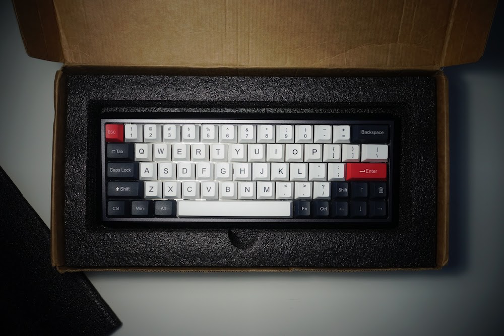

Keyboard Gallary
GK68
The following is one of my preciest 60% keyboard, I bought the PCB, alone with its key switces
and caps online from Ali-Express (KBDFans) and Aluminum case from Massdrop. The built took me two days,
the process is every so pleasent you can emagine, the the result is stunning.
Now enjoy the moment of viewing this beatiful piece of work. (Of couse, by work, i mean by those who deisgned these part, I am just the one who put them together...)
Overlook 1
Overlook 2
Hot-Swappable PCB
All the switches can be replaced, this means the infinite possibility for later upgrate.
Unstablized CAPS
It is unfortunate this keyboard does not have any stablier for the left shift and caps
Switches 1
Here I tried some white switces on the arrow keys for more tactile feeling
Switches 2
Here I put one silver switces instead for shorter triggering distance

Keycaps
This keyboard i built only uses ABS caps, and that means they are very likely to wearout overtime, better ones will use PBT, POM
Last Look
This is the last scene before I carefully seals it.
Well.. because in real-life, I actually type way slower on the mechenical ones
{kind=link}
{kind=link}
{kind=link}
{kind=link}
{kind=link}
{kind=link}
{kind=link}
{kind=link}